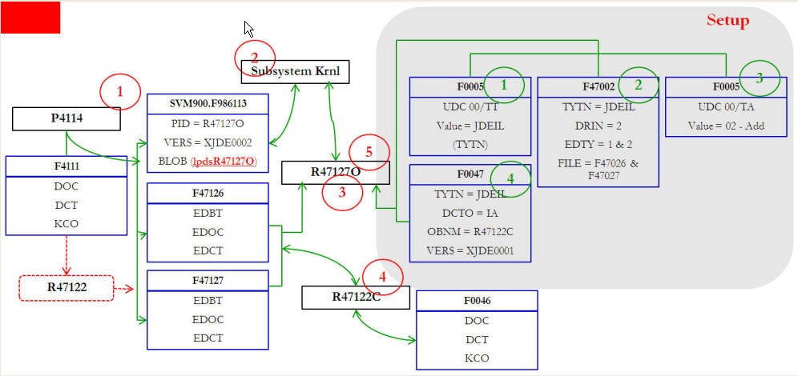

This note is to explain Interoperability Transaction Type 'JDEIL - Item Location' which can be found in Inventory Transaction Application.
Through this note, we may identify concerns in dealing with item location file and provide answers on this type of inquiry.
Q1> What are the applications which have JDEIL - 'Item Location' as processing Option?
Below objects have option to interface:
P4112 - Inventory Issue (T4112)
P4113 - Inventory Transfer (T4113)
P4114 - Inventory Adjustments (T4114X)
P4116 - Item Reclassification (T4116)
R41413 - Cycle Count Update (T41413)
R41610 - Tag Inventory Update (T41610)
R47121 - EDI Product Activity Data Edit/Create (T47121)
R47122 - EDI Product Activity Data Extraction (T47122)
Q2> Does JDEIL write to the Z (F41021Z1) table?
No, JDEIL does not populate F41021Z1. It populates the following tables:
F47126 - EDI Product Activity Data Header - Outbound
F47127 - EDI Product Activity Data Detail - Outbound
Cf., TYTN (TypeTransaction) 852 - Product Activity Data which may populate below,
Inbound
F47121 - EDI Product Activity Data Header - Inbound
F47122 - EDI Product Activity Data Detail - Inbound
Outbound
F47126 - EDI Product Activity Data Header - Outbound
F47127- EDI Product Activity Data Detail - Outbound
Q3> Then how does table F41021Z1 get populated?
Currently Item Location Extraction has standalone settings so it is not meant to be called by/from other interactive applications. So though it populates the Z Table (F41021Z1) the mechanism for interfacing with this table is different from other interoperability functions in EnterpriseOne. Data from F41021Z1 can be populated either by entering data P41021Z1 or by running R41021ZX.
Table F41021Z1 (Item Location Unedited Transaction File) can be populated as below:
Q5> How can EDI Product Activity Outbound be implemented?

Basic Set Up:
1. Verify UDC 00/TT - Transaction Type has definition for the transaction you want to perform (e.g., JDEIL)
2. Verify Transaction Type defined above has definition on Interoperability file for outbound
3. Verify UDC 00/TA - Transaction Action
4. Add Data Export Control record through P0047 - Data Export Controls which writes F0047
Execution:
Business Scenario: whenever a certain inventory transaction takes place create a flat file based on 'EDI Product Activity Data Header - Outbound (F47126)' and 'EDI Product Activity Data Detail - Outbound (F47127)'
1. Set/verify Processing Option item #1. Transaction Type in Interop tab "JDEIL"
3. Verify that F47126/F47127 get populated and a single row of data is inserted into SVM900.F986113
4. Run R47127O - Outbound Product Activity Data Subsystem UBE (or through continuously running process of subsystem job R47127O ), F0046 gets populated based on definition in F0047
R47127O can be continuously running process or you may submit it manually
5. Verify jobs (triggered by subsystem kernel and processed by queue kernel, UBE kernel and callobject kernel). R47122C (or your custom report or BSFN) gets called SYNCHRONOUSLY through R47127O
6. Purge F47126/F47127 through EDI Product Activity Outbound Data Purge R47129A
Note:
This routine is more or less same with R00460 routine
F0046 is written/updated through R47127O because this report is made up of two section
Read EDI files (F47126 and F47127)
Create F0046 based on F0047
Output of flat file can be created as you define in the processing option of R47122C
Demo data may point data for JDEIL into F41021Z1 which you may modify accordingly
Unless you have to send flat file to your business parties do not implement this (or do not set Processing Option 'JDEIL' in the application listed above
F986113 belongs to SVM900 data source regardless OCM mapping you may override
F986113.BLOB contains data structure for calling UBE which is R47127O to make individual job unique
Currently there is implementation for transaction type 852/INVRPT by default. If needed override it into JDEIL
To refer how data are read/populated refer <Document 1342363.1> E1: 31: R00460 Implementing Work Order Extraction in P48013 (JDEWO)